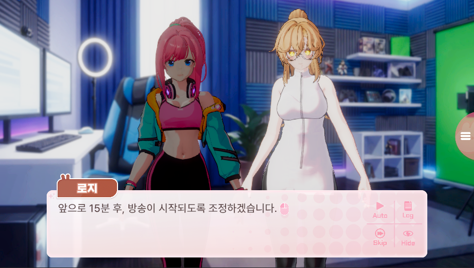

URP Stencil Buffer 기반 캐릭터 오버레이 시스템
프로젝트 요약
대화 중 현재 발화자는 원래 색을 유지하고, 나머지 캐릭터는 회색 오버레이로 시각적 우선순위를 낮추는 연출을 구현했습니다.
lilToon이 기록한 캐릭터별 Stencil ID를
StencilOverlay가 풀스크린 패스에서 판별해 색을 합성합니다.


| 항목 | 내용 |
|---|---|
| 프로젝트 | 3D 캐릭터 기반 비주얼 노벨 |
| 담당 | Unity 클라이언트 개발 |
| 기술 | Unity, C#, URP, ScriptableRendererFeature, Shader, Stencil Buffer |
문제 상황
여러 캐릭터가 등장하는 대화 장면에서 현재 발화자가 주목되도록 나머지 캐릭터는 회색 오버레이 효과를 적용하기로 했습니다.
캐릭터마다 사용하는 원본 머티리얼과 셰이더 구성이 달랐기 때문에 각 셰이더에 동일한 색상 연산을 추가하면 수정 범위가 넓어집니다. 원본 머티리얼의 색을 직접 바꾸면 lilToon의 조명, 림라이트, MatCap, 발광과 상호작용해 캐릭터마다 결과가 달라지는 문제도 있었습니다.
해결 방법
원본 캐릭터를 오버레이 머티리얼로 다시 그리지 않고, lilToon이 남긴 Stencil Buffer를 화면 마스크로 사용했습니다. URP Custom Render Feature 안에서 StencilEraser 패스와 StencilOverlay 패스를 순서대로 실행하고, 캐릭터 ID별 색상 매핑을 풀스크린 합성에 전달했습니다.
flowchart LR lilToon["lilToon 원본 렌더링"] occluder["UI · 배경 · 3D 차폐 오브젝트"] recordedStencil[("Stencil Buffer · ID 기록 상태")] subgraph overlayFeature ["OverlayEffectRenderFeature"] direction LR eraser["StencilEraser Pass"] visibleStencil[("Stencil Buffer · 차폐 반영")] overlay["StencilOverlay Pass"] eraser -->|"가려진 픽셀을 0으로 교체"| visibleStencil visibleStencil -->|"남은 ID 비교"| overlay end output["최종 화면"] lilToon -->|"본체 · 윤곽선 ID 기록"| recordedStencil recordedStencil --> eraser occluder -->|"차폐 영역 제공"| eraser overlay -->|"풀스크린 색상 합성"| output
캐릭터가 겹칠 때 발생한 윤곽선 오염
초기 구현은 여러 캐릭터가 Stencil ID를 공유하고, 매쉬에서 Stencil ID로 기록된 부분에 색을 다시 랜더하는 방식이었습니다. 단독으로 표시할 때는 문제가 드러나지 않았지만, 두 캐릭터가 화면에서 겹치자 한 캐릭터의 색상 매핑이 다른 캐릭터의 윤곽선까지 채색하는 현상이 발생했습니다.
그래서 각 캐릭터별 고유한 Stencil ID를 지정하고, 풀스크린 메시를 랜더하는 방식으로 이를 해결했습니다.
Custom Render Feature의 두 패스
오버레이 효과를 구현하기 위해 URP Renderer Data에 OverlayEffectRenderFeature라는 Custom Renderer Feature를 추가했습니다. 이 Renderer Feature는 전경 오브젝트가 가린 영역의 Stencil을 정리하는 StencilEraser Pass와, 정리된 Stencil을 기준으로 색상을 합성하는 StencilOverlay Pass로 구성됩니다.
1. StencilEraser Pass
StencilEraser가 필요한 이유는 풀스크린 Overlay Pass가 ZTest Always로 깊이 검사를 생략하고 Stencil 값만 비교하기 때문입니다. 캐릭터가 Stencil ID를 기록한 뒤 UI나 다른 3D 오브젝트가 캐릭터를 가려도, 이 오브젝트들은 일반적으로 캐릭터가 남긴 Stencil 값을 지우지 않습니다. 그 결과 Overlay Pass가 가려진 캐릭터의 Stencil까지 읽어 전경 오브젝트 위에 오버레이 색상을 합성하는 문제가 발생합니다.
이를 막기 위해 NoOverlayPass는 캐릭터를 가릴 수 있는 UI 등의 비캐릭터 레이어를 StencilEraser 머티리얼로 다시 그립니다. ColorMask 0으로 화면 색상은 그대로 유지하면서 해당 픽셀의 Stencil만 0으로 교체하므로, 이후 Overlay Pass는 전경 오브젝트에 가려진 영역을 합성 대상에서 제외합니다.
ColorMask 0
ZWrite Off
ZTest LEqual
Stencil
{
Ref [_StencilID] // StencilEraser 머티리얼 설정값: 0
Comp Always
Pass Replace
}2. StencilOverlay Pass
OverlayPass는 캐릭터 ID별 StencilOverlay 머티리얼로 풀스크린 메시를 그립니다. 셰이더의 Comp Equal 조건 때문에 화면 전체를 그려도 현재 _StencilRef와 같은 Stencil 픽셀만 색상이 출력됩니다.
ZWrite Off
ZTest Always
Blend SrcAlpha OneMinusSrcAlpha
Stencil
{
Ref [_StencilRef]
Comp Equal
}두 패스는 모두 AfterRenderingTransparents 시점에 실행됩니다. AddRenderPasses에서 Eraser Pass를 먼저 등록하고 Overlay Pass를 다음에 등록해, 제외 영역을 정리한 Stencil Buffer를 기준으로 색을 합성합니다.
public override void AddRenderPasses(ScriptableRenderer renderer, ref RenderingData renderingData)
{
if (noOverlayPass != null)
renderer.EnqueuePass(noOverlayPass);
if (overlayPass != null)
renderer.EnqueuePass(overlayPass);
}이를 통해 여러 캐릭터의 오버레이 상태를 독립적으로 제어할 수 있었습니다.